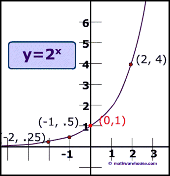
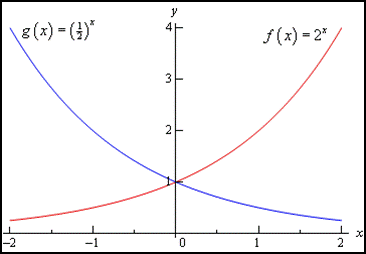
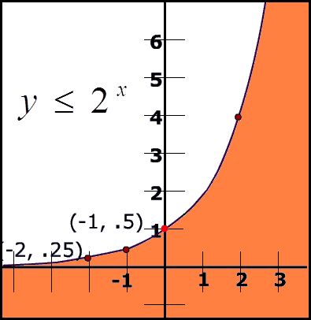

Exponential Function
$y=a^x$, where $a∈R^+$ & $x∈R$ |
 |
$y=a^x$, where $a∈R^+$ & $x∈R$ |
| $\table \text"when "0 <a<1; g(x)=(1/2)^x=(2^{-1})^x=2^{-x}$ any # raised to the 0 power equals 1 |
 |
| $\table \text"when "0 <a<1; g(x)=(1/2)^x=(2^{-1})^x=2^{-x}$ any # raised to the 0 power equals 1 |
| Transformations of Exponential Functions | |
|---|---|
| $y=±a^{x-b}+c$ | |
| '+' means increasing - means decreasing |
larger 'a' means steeper graph |
| translates left or right, b uints along x-axis | translates up or down, c units (a.k.a. the horizontal asymptote) |
| $y≤2^x$ ← you may multiply or divide by a negative, so a test point is needed to determine the solution region | |
|  | test pt:(0,0) $\table y≤2^x; 0≤2^0; 0≤1$ since (0,0) satisfies the inequality, it's in the solution region |
| $y≤2^x$ ← you may multiply or divide by a negative, so a test point is needed to determine the solution region | |
| test pt:(0,0) $\table y≤2^x; 0≤2^0; 0≤1$ since (0,0) satisfies the inequality, it's in the solution region |
|